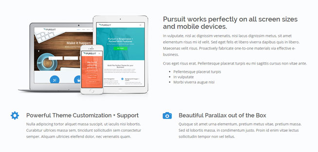

Entrepreneur Documentation
View on ThemeForest*Important Note
This documentation serves as an overview and guide to getting started.
Videos, FAQ, and Support Articles are available here: https://themovation.ticksy.com/articles/
If you have any other questions, please don't hesitate to open a ticket on our our support system.
Thank you!
- Thank you and congratulations for purchasing Entrepreneur. We have put a lot of time and effort to ensure that you have a positive experience using this theme. Our goal is to answer any questions you may have regarding this theme. If you have a question that is not answered here we welcome you to visit our support system.
01 - Getting Started
To install this theme you must have a working version of WordPress. For instructions on how to install and setup WordPress please see the WordPress website. http://codex.wordpress.org/Installing_WordPress
-
Installation
To install the theme you must upload the theme file package and then activate it inside the WordPress Admin area. Sign in and download from ThemeForest. Choose 'Installable WordPress File Only'
Themes can be uploaded in two ways:
- WordPress Upload: Once you are logged into your WordPress site navigate to Appearance > Themes > and click on the Install Themes tab. Next click on Upload and then Browse..., and select the zipped theme file. Click "Install Now" and the theme will be uploaded and installed.
- Manual FTP: Using an FTP program, upload only the unzipped theme folder (not the .zip file or all of the folders) into the /wp-content/themes/ folder on your website server.
Once the theme is uploaded, you need to activate it. Go to Appearance > Themes and click activate below your newly uploaded theme. Next, follow the setup instructions below.
Having issues? Check out this help article from Envato.
-
Setup
Once activated, you will need to follow the on-screen instructions with regards to Required and Optional Plugins. It's highly recommended to install ALL required and optional plugins for the best user experience.
- If you missed the activation setup step, you can always check to see the current setup progress under Appearance > Theme Activation
-
Demo Content
Included in this theme package are sample data files that you can import to quickly and easily have your site look very similar to the demo site. Importing these files will add posts, pages, comments, custom fields, navigation menu content, categories, tags, widgets, and forms to your new website.
Importing Content
- Locate one of the sample content files {name of demo}-demo-content.xml, in the theme package. It's in a folder called demo content. There is one for each of our demos (8 in total).
- From the WordPress dashboard, go to Tools > Import and click WordPress.
- If you have not installed the Import Plugin yet, you will be prompted to do so.
- After you activate the plugin, select the file from your theme package and follow the instructions.
Importing Widgets
- Locate the sample content file entrepreneur-demo-widget-content.wie, in the theme package. It's in a folder called demo content.
- From the WordPress dashboard, go to Tools > Widget Importer & Exporter and click Choose File, (find import .wie file) then click Import Widgets and follow the instructions.
- If you have not installed the Widget Importer & Exporter Plugin yet, you will need to do so. You can always go back to the setup process to install it under Appearance > Theme Activation. You can also find a direct link here.
Importing Forms
- Locate the sample content file entrepreneur-formidable-custom-forms.xml, in the theme package. It's in a folder called demo content.
- From the WordPress dashboard, go to Formidable > Import / Export and click Choose File, (find import .xml file) then click Upload file and import.
- If you have not installed the Widget Importer & Exporter Plugin yet, you will need to do so. You can always go back to the setup process to install it under Appearance > Theme Activation. You can also find a direct link here.
02 - Theme Options
-
Theme Options Panel
The Theme Options panel is the best place to start for all your site wide settings. You will find this via Appearance > Theme Options.
- General Tab | Favicon, Logo with Retina Support, Navigation Margin Adjustment, Custom CSS, Smooth Scroll, Content Preloader
- Typography & Fonts | Body, Menu and Heading sizes, font family and colors. Add any Google Font here.
Physician
Google Font Name / Font Family : 'Lato', sans-serif
Google Font URL : http://fonts.googleapis.com/css?family=Lato:300,400
(save changes)
Headings Font > font-family > Lato
Headings Font > font-weight > Normal
(save changes)Contractor
Google Font Name / Font Family : Montserrat
Google Font URL : http://fonts.googleapis.com/css?family=Montserrat
(save changes)
Body Font > font-style > Normal
Body Font > font-weight > Normal
Headings Font > font-family > Montserrat
Headings Font > font-weight > Normal
(save changes)Consultant, Coach, and Stylist
Google Font Name / Font Family : Raleway
Google Font URL : http://fonts.googleapis.com/css?family=Raleway
(save changes)
Headings Font > font-family > Raleway
Headings Font > font-weight > Normal
(save changes)Trainer
Google Font Name / Font Family : Montserrat
Google Font URL : http://fonts.googleapis.com/css?family=Montserrat
(save changes)
Headings Font > font-family > Montserrat
(save changes) - Business Info | Add your social media accounts here and you can use the corresponding widget to display them. The same is also true for the the Payments accepted, and Contact details.
- Site Layout | Sticky Header, Transparent Header, Full Width or Boxed Layout, Site Background Options (Boxed Layout Only), and Automatic Retina Creation option.
- Footer | Copyright, Credit, Footer Widgets
- Slider | Various Slider Options and Settings
- Header & Sidebar | General Settings for Blog, Search, 404 etc
- Portfolio | Portfolio and Project Options (Portfolio Home, Custom Permalink / slug, AddThis, Icons, Navigation Control.
- Top Navigation | Show / Hide Top Navigation, add custom text message and top mini icon blocks.
Accent Button
- Create your navigation Menu under Appearance > Menus
- On the left side, click Links, and add a new menu item.
- Go to the top and click Screen Options. Ensure the box is checked for CSS Classes.
- In the menu item you want to have as the accent button, click the down arrow next to Custom and insert the class 'th-accent'
Automatic Retina Creation
- (Appearance > Theme Options > Site Layout) - This option is disabled by default to reduce server load. You can safely enable this before you start uploading images. Essentially you are telling the theme to automatically make a retina version of every image you upload, if it's at a high enough resolution. (The exception is the logo which is handled separately) When you initially upload images via WordPress Media Library, you may notice a lag in processing time for Retina, but your visitors will not notice any additional performance lag.
One-Page Site Option
- In Entrepreneur, you have the option to setup your site as a traditional multi page site, or as a one-page site. In the one-page style, you can still include links to other sections as well, such as the blog.
- If you'd like your site to be One Page style, when building your site just add all of your meta boxes and content onto one page. In each meta box, on the Display tab you'll see a field in which to add an Anchor. You can put in any text you like, without spaces. For example: aboutus
- Once you have that in place, you can create your navigation Menu under Appearance > Menus
- On the left side, click Links, and input the URL to your page, including you anchor with a hashtag before it, ie: http://www.yourdomain.com/home/#aboutus
- The Link Text field is for the text you'd like to show up as the link, ie: About Us
- Once all your links are added, go to the top and click Screen Options. Ensure the box is checked for CSS Classes.
- In each of your one-page links, click the down arrow next to Custom and insert the class 'th-anchor'
- For the first link only (likely Home) insert a second class 'th-anchor-top' so the field should read 'th-anchor th-anchor-top'
03 - Content Blocks (aka Meta Boxes)
Content Blocks, also known as Meta Boxes are designed to help make adding and maintaining content very easy. There are many things you can do with Content blocks. You add, sort and edit them on the page edit screen.
-
Meta Box Builder
- Every page has a Meta Box Builder Meta Box where you can do things like, adding, sorting and multiplying Meta Boxes.
Sorting
- You can sort Content Blocks using the Sort Tab under the Meta Box Builder. Drag and Drop your order and update page to save changes.
Quantity / Multiple Meta Boxes of the same type
- Use the Quantity tab under the Meta Box Builder to add multiple Meta Boxes of the same type.
Show & Hide
- Check the display checkbox under the Display Tab on any Content Block to Show or Hide that Content from display. Content is saved but will be hidden from display.
- To permanently remove a Content Block from the Edit Screen, use the Page Template settings. Careful! Make sure to uncheck the display checkbox before permanently removing via Page Templates Settings.
Other Options
- Most Content Blocks come with additional options to help you achieve the perfect look. Header, Background, Animation, Borders and Padding tabs are accessible below the display tab. Check em out.
Where do I Add Content?
The Short answer is under the Admin Menu > Entrepreneur.
Use "Groups" under Admin Menu > Entrepreneur > Groups to group content you would like to display together.
Also see: Adding Content to a Meta Box and Ordering Content for Display
-
Accordions
Admin Menu > Entrepreneur > Accordions -
Brands
Admin Menu > Entrepreneur > Brands -
FAQs
Admin Menu > Entrepreneur > FAQs -
Featured
Admin Menu > Entrepreneur > Featured -
Pricing Plans
Admin Menu > Entrepreneur > Pricing Plans -
Sliders
Admin Menu > Entrepreneur > Sliders -
Teams
Admin Menu > Entrepreneur > Teams -
Testimonials
Admin Menu > Entrepreneur > Testimonials -
Thumbnail Sliders
Admin Menu > Entrepreneur > Thumbnail Sliders -
Tours
Admin Menu > Entrepreneur > Tours -
Service Blocks
Admin Menu > Entrepreneur > Service Blocks
Adding Content to a Meta Box
Reference your (custom post type) content inside any of the meta boxes. Some of the meta boxes don't require a custom post type, you can add content directly inside the meta box.
Example: Adding content to a Service Block Meta Box. You can add content by selecting individually or by groups. You can also change the order by setting here.
Ordering Content for Display
Content inside a meta box can be set to be output by date or by drag and drop order.
Drag and Drop - you must have the 'Simple Page Ordering' plugin installed and activated for this option to work.
Example: Drag and Drop content order of Service Block Custom Post Types.
#1 - Click on 'Sort by Order'
#2 - Drag and Drop your content (it will auto save)
By Date - Content will be output by published date.
Types
Content blocks provide an easy way to add and management content. Changing the sort order is a breeze. Virtually every content block supports, a header, background, parallax, animation, padding, and borders in addition to the specific content layouts below.
- Accordion aka collapse boxes - Build collapsible content blocks easily. Supports title, full HTML, icons and buttons.
-
Booked - To display a Booked Calendar (Requires that you install and activate the Booked Plugin bundled with this theme).
For more information, have a look at the Booked section.
- Brands - Create an in-line list of logos. Supports links.
-
Call to Action - Add a call to action statement with button. You can use a standard, ghost style, or call to action button.

-
Content Editor - Add this meta box to make it so that you can control the output of the WordPress content editor in the same way as the other meta boxes: change the order, hide it, or add anchor text to link to the section for a one-page site.
- Conversion Form - Add a Formidable form easily to convert more leads.
-
FAQ - Build a list of Frequently Ask Questions. Supports full HTML

-
Features - Ideal for featuring a product or service with an image. Supports image, title, text and link.

- HTML - Full HTML with TinyMCE
- Map - Easily create a Google Map with Marker. Option to replace page header or use in-line with content.
-
Master Slider - Ideal for adding a Master Slider Shortcode to the top of a page.

- Portfolio - To display a collection of projects on a page.
- Pricing Plans - Service or product pricing tables. Supports title, price, price per, pricing details, button text, button link, most popular switch.
- Service Block - Highlight your services with an icon, title and text. Includes two main styles: vertical and horizontal alignment. Horizontal supports 1 column, 2 column, and 3 column with an image as the middle column.
- Service Block Split - Service Block 50/50 split with an HTML content block that can be set to either left or right.
- Showcase - Ideal for detailed showcase of a product or service. Main image can be aligned left, right, or center. Supports featured image, title, full HTML, unlimited bullets below which include icon, title, text and link. 
- Slider - Flexslider that supports, title, subtitle, button text, button link, image, image link, background, and form shortcode.
- Team - Build your team with this content block. Supports name, title, bio, photo, social icons and links.
- Testimonials - Supports name, title, quote and photo.
- Thumbnail Slider - Thumbnail carousel. Includes two main styles: horizontal and vertical. Supports images, title, subtitle, and link.
- Tour - Great for displaying features of a product or service. Main image can be aligned left, right, or center. Supports title, full HTML, button text, button link, and image.
04 - The Booking System
Entrepreneur comes bundled with the full version of the Booked plugin which is a full online appointment booking system. You can view the plugin documentation here.
Also included are all three of the premium Booked add-ons: Payments with WooCommerce, Front-End Agents, and Calendar Feeds. The add-ons are located in the theme download package under /entrepreneur/plugins/. They can be installed in the same way as any other standard WP plugin.
Setup
For information on getting setup, have a look at the Installation & Setup Guide.
The plugin documentation also includes info on setting up the add-ons as well.
Payments
If you would like to setup the booking system to directly accept payments as shown in the demo, then you'll want to use the (free) WooCommerce plugin along with the premium add-on Booked Payments with WooCommerce, included in the download package (see above). Once you have the add-on installed, have a look at this article for getting set up.
05 - Portfolio
Portfolio is a collection of projects. Each project should be organized into a Project Type (or tag). First you add a project and then you display them as part of a portfoio, using the portfolio template or portfolio meta box. Organizing projects into projects types makes it easier for you to add them to a portfolio.
-
Adding Portfolio Projects
Add new projects via Admin Menu > Portfolio > Add New.
- Title
- Description (content editor / wysiwyg)
- Excerpt - If used, this will override what is displayed on the portfolio hover
- Featured Image - Displayed on the Project Single and also as the thumbnail on the Portfolio.
- Project Options Meta Box
- Show button
- Show Project Type Icon
- Alternative Thunbmail Image
- Enable Lightbox on Portfolio
-
Creating a Portfolio page
A great and quick option to display a portfolio on a page.
- Add a new Page and choose 'Portfolio - Standard' from the Template Dropdown inside the Page Attributes Meta Box.
- Configure Settings inside the 'Portfolio Options' meta box.
- Show Projects Filter Bar - if you want to allow visitors to sort by project type.
- Filter by Project Type - Will display projects that belong to one or more Project Types that you choose.
- Projets Per page
- Number of Columns to Show
- Order By - Date or Drag and Drop. (see how drag and drops works here)
- Save Changes
-
Adding a Portfolio meta box
A great option if you want to display a few projects in with other content on a page.
- This is part of the Meta Box Builder System. Use this link to find out about general meta box settings such as padding, boders etc.
- Show Projects Filter Bar - if you want to allow visitors to sort by project type.
- Select individually - Choose specific projects you wish to display.
- Select by Project Type (Group). - If you have organized your projects in project types, then this option is very handy.
- Order By - Date or Drag and Drop. (see how drag and drops works here)
- Number of Columns to Show
- Save Changes
-
Portfolio General Settings
Find general settings via Apperance > Theme Options > Portfolio Tab.
- Portfolio Home - Each Project Pae and a home button. This setting allows you to specify where that buttons goes.
- Anchor Link - If you would like to anchor down using the portfolio home linke above, specicy your anchor here.
- Custom Slug - Set your custom permalink / slug here. Default is 'portfolio'
- AddThis Enable
- Project Icons - Disable the icon from displaying on hover (portfolio page and meta box)
- Navigation Control - Disable project prev / next buttons.
06 - Forms
Entrepreneur makes use of the Formidable plugin to handle all forms in the theme with a nice drag-and-drop interface. When setting up the theme you'll be prompted to install the plugin.
-
Getting Setup
- We strongly recommend importing the forms shown in the theme demo if you'd like to include a similar form on your website, as it's the simplest way to get started.
- You can view this section of the documentation covering the import of the demo forms.
- If you have questions about settings in the plugin, there's a lot of information in the Formidable Knowledge Base. If you can't find the answer you're looking for, we welcome you to post in our support forum.
07 - Theme Shortcodes
25 Bootstrap 3 shortcodes will beautify your website
-
How to use
Use the shortcode generator tool that is accessible on the TinyMCE editor. Look for the 'Add Shortcode button'.
- Click on Add Shortcode
- Select a shortcode from the dropdown list
- Add your content and use the in-line help for support
- Click the Insert button to add the shortcode into your content
-
List
25 shortcodes based off of Bootstrap 3
- Accordion
- Alert
- Blockquote
- Button - Single
- Button Group
- Button Dropdown
- Carousel / Slider
- Code
- Column
- Drop Cap
- Glyphicons
- Google Map
- Highlighted Text
- Horizontal Description
- Image Shapes
- Jumbotron
- Label
- Lead Text
- Modals
- Page Header
- Panels
- Popovers
- Progress Bars
- Togglable Tabs
- Tooltips
08 - Sidebars & Widgets
Entrepreneur comes with a primary sidebar, and up to 4 footer widget areas.
-
Organizing
Use Widget Logic (a free plugin) to control where sidebars & widgets appear. Widget logic is lightweight, easy to use, and Free. All you need is one sidebar and you define where each widget shows up.
- Example: You have two widgets, a form widget and a simple text widget. You want the text widget to show on all sidebars, but you want the form widget to only show on the contact page.
- Solution: Add the text & form widgets to the primary sidebar and save. Make sure you have installed Widget Logic. Open up the Form Widget in the Primary Sidebar, under 'Widget logic:' enter in the following: is_page('contact'), where contact is the name or your contact page slug. Save.
- Widget logic has many filters using WP conditional logic. It's awesome. Here are some helpful links:
- Plugin Homepage
- Condition Tags (aka filters)
-
Footer
The Footer supports up to 4 widget columns. You can set the number under Appearance > Theme Options > Footer
-
Show, Hide and Align
You control if a sidebar diplsays on any page or on posts or the blog homepage.
- Pages: All pages have a 'Page Layout' meta box on the edit screen. This allows you to choose a Right, Left or No Sidebar setting.
- Blogs, Search, 404 and Archives Sidebar Settings are managed under Appearance > Theme Options > Header & Sidebar. Each group has it's own tab.
09 - Page Headers
-
Pages
All pages come with a Page Header Meta Box. You can add a title, subtext, button, background, parallax, animation and padding.
-
Google Map
Replacing the Page Header with a Google Map is done via the Map Meta Box (Common on the Contact Page). There is an option under the Map tab of the Map Meta Box, 'Replace Header with Map'.
-
Blogs, Search, 404 and Archives
Page Header settings for Blogs, Search, 404 and Archives are managed under Appearance > Theme Options > Header & Sidebar. Each group has it's own tab.
10 - The Blog
-
Getting Started
The easiest way to get started with a blog is to import the demo content. This will create a blog page and display your most recent posts. You can manage page header, sidebar or standard / masonry options for the blog here, Appearance > Theme Options > Header & Sidebar
-
Setup a blog without demo content
- Create a page for your blog.
- Under Settings > Reading and set 'posts page' to the page you created for your blog.
- To managed page header, sidebar or standard / masonry options, go to Appearance > Theme Options > Header & Sidebar.
-
Custom page headers for blog
To use the Full Page Header options, like background, animation, padding, use the 'Standard' or 'Masonry Page Template' from the edit screen of your Blog Page, under the 'Page Attributes' Meta Box.
11 - Child Themes
We highly recommend using our Theme Features to get the customized look your are seeking, however as a developer or designer you may want to create a child theme to satisfy your apetite for complete control. In this case, we recommend using our sample Child Theme.
-
Creating a Child Theme
- Go to Appearance > Themes > and click on 'Activate' under Entrepreneur Child Theme.
- Now you can add and fully customize your own PHP, CSS, JS, and other files you add under the themes/entrepreneur-child/ folder.
- To learn more about using a Child Theme please visit the WordPress.org Codex site.
12 - Multi Language Support
Entrepreneur can be easily translated in to your own language.
-
Language Translation using Poedit (Free) by creating a .po file
- Download and install Poedit if you haven't done so already.
- Find Entrepreneur.pot file under Entrepreneur theme folder /lang (e.g. /wp-content/themes/entrepreneur/lang/entrepreneur.pot)
- Open the .pot file in Poedit.
- (See Image on the right) The box labeled (1) is the original message (in English) from the .pot file. The box labeled (2) is where you add your translation. Boxes labeled (3) and (4) are used for adding comments about the messages. These come in handy if you are working with a team of translators and would like to pass around ideas through the .po file.
- Go to File / Save as... to save your translations in a .po file. If you do not know how to name it, take a look at this page: Translating WordPress With Poedit. The name you should use is the combination of the project’s text domain (locate it inside codes) and a short string in parentheses next to a language’s name (e.g. French – Français (fr_FR)). For example, if the text domain is entrepreneur and the translation is French, just name the .po file
entrepreneur-fr_FR. - When you have finished translating, go to File → Save as… again to generate the .mo file. Or you can set your Poedit to always compile a .mo file when saving changes by clicking File / Preferences and on the Editor tab check the Automatically compile .mo file on save box.
- Open your wp-config.php file in a text editor and search for: define ('WPLANG', '');
- Edit this line according to the .mo file you've just created, e.g. define ('WPLANG', 'entrepreneur-fr_FR');
- Ref: Translating WordPress With Poedit
-
Language Translation using WPML (Premium)
- Download and install WPML if you haven't done so already.
- Follow the steps outlined on the WPML site. Getting Started Guide
13 - Additional Help
This documentation was designed as an overview and guide to getting started.
Additionally, there are Videos, FAQ, and Support Articles available here: https://themovation.ticksy.com/articles/
If you have any other questions, please don't hesitate to open a ticket on our our support system.
Themovation
Last update: August 04, 2016